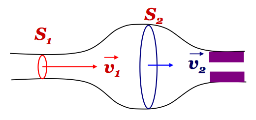

Dinamica dei fluidi
- Legge di Simon Stevin
- Spinta di Archimide
- Portata di un fluido
- Teorema di Bernoulli
- Teorema di Torricelli
Antonio Pierro @antonio_pierro_
Per consigli, suggerimenti, eventuali errori o altro potete scrivere una email a antonio.pierro[at]gmail.com
Fluido
- Si definisce fluido una sostanza (liquida o gassosa) che assume la forma del recipiente che la contiene.
- Differenze tra liquidi e gas:
- la densità dei liquidi è molto maggiore di quella dei gas.
\[
\rho_{H_2O} = 10^3 \frac{kg}{m^3}, \quad \rho_{aria} = 1.3 \frac{kg}{m^3}
\]
- I liquidi sono incomprimibili, mentre un gas risulta comprimibile con facilità.
Pressione
- Si definisce pressione in un punto del fluido il rapporto tra la forza agente su una superficie infinitesima che circonda il punto e l'area della superficie stessa:
\[
P = \frac{dF}{dS} \quad (\frac{N}{m^2}, Pascal)
\]
-
Se S è una superficie finita nella quale la pressione è costante:
\[
P = \frac{F}{S}
\]
Principio di Pascal
- Il principio di Pascal afferma che ogni cambiamento della pressione esterna dà luogo a un'eguale variazione di pressione nel fluido:
\[
p = p_0 + \Delta p
\]
- Attenzione: in un piccolo volume di gas, \(\Delta{p}\) è molto minore di \(p_0\) e quindi, con buona approssimazione, la pressione nel gas è ovunque costante e pari al valore della pressione esterna \(p_0\).
Vasi comunicanti
- Consideriamo un sistema di recipienti in comunicazione tra loro, riempiti dello stesso liquido e aperti nello stesso ambiente.
- Il liquido nei vari recipienti assume lo stesso livello rispetto al suolo.
- Questo risultato esprime il principio dei vasi comunicanti.
Manometro 1/2
- Il manometro è uno strumento di misura della pressione dei fluidi costituito da un tubo a forma di U.
- Se i due rami comunicano con ambienti a diverse pressioni si produce un dislivello tra le due superficie libere dato da:
\[
h = \frac{p_1 - p_2}{\rho g}, \quad \]
in accordo con la legge di Stevin.
Barometro di Torricelli
- Poichè nel ramo chiuso c'è il vuoto, il dislivello è dovuto solo alla pressione atmosferica che vale dunque \(\rho * g * h, \quad \rho_{Hg} = 13.59 \frac{g}{cm^3} \Rightarrow \ 1.013 * 10^5 Pa\)
Flusso di un campo vettoriale
- In Matematica, il flusso di un campo vettoriale \(\vec{V}\) attraverso una superficie orientata S è definito come l'integrale di superficie del prodotto scalare del campo vettoriale \(\vec{V}\) con il versore normale della superficie, esteso su tutta la superficie stessa.
\[
\Phi = \int_S \vec{V} d\vec{S} = \int_S \vec{V} \vec{n}dS
\]
Fluido ideale
- Si definisce viscosità una grandezza fisica che quantifica la resistenza dei fluidi allo scorrimento.
- Si definisce fluido ideale un fluido incomprimibile e con viscosità nulla.
- Nei liquidi la viscosità decresce all'aumentare della temperatura, nei gas invece cresce, considerando il volume invariato.
Teorema di Bernulli
- Quando un fluido ideale si muove in regime stazionario (le molecole del fluido si muovono con la stessa velocità in qualsiasi punto della sezione) lungo un condotto, vale il teorema di Bernulli:
\[
p + \frac{1}{2} \rho v^2 + \rho g h = costante
\]
- In ogni sezione del condotto la somma della pressione, dell'energia cinetica per unità di volume e dell'energia potenziale per unità di volume è costante.
Esempio: aneurisma

- Un aneurisma è una dilatazione progressiva di un segmento vascolare.
\[
v_2 < v_1 \Rightarrow p_2 > p_1
\]
\[
p_1 - p_2 = \frac{1}{2}\rho(v_2^2 - v_1^2), \quad v_2 = \frac{S_1}{S_2}v_1
\]
Teorema di Torricelli
- Se in un recipiente di sezione S, pieno di liquido, viene praticato un foro di sezione molto minore di S a una profondità h rispetto alla superficie libera del liquido, la velocità con cui il liquido esce dal foro è:
\[
v = \sqrt{2 g h}
\]
Teorema di Torricelli, dimostrazione
\[
p_0 + \rho * g * h = p_0 + \frac{1}{2} \rho v^2 \Rightarrow v = \sqrt{2gh}
\]